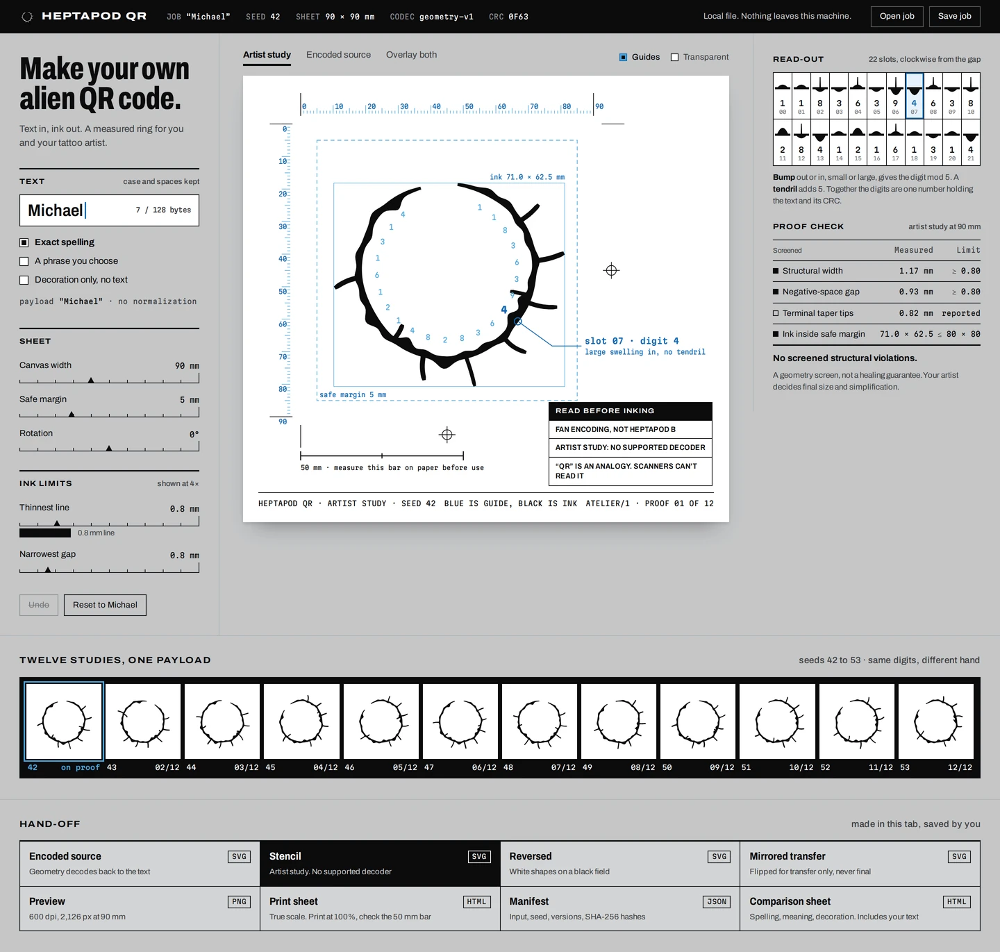
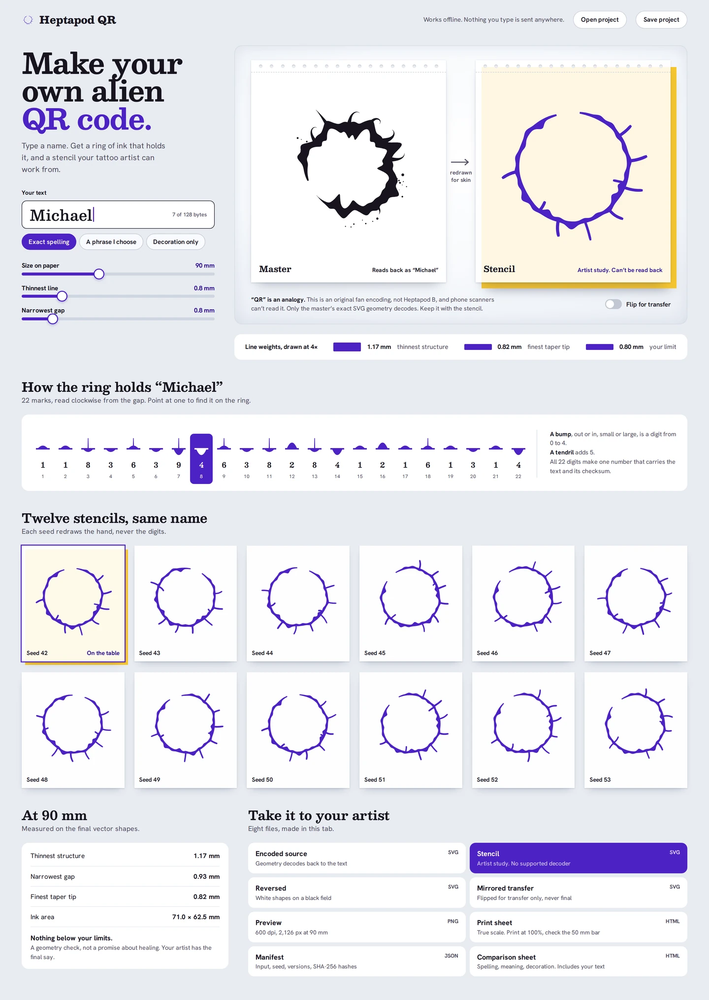
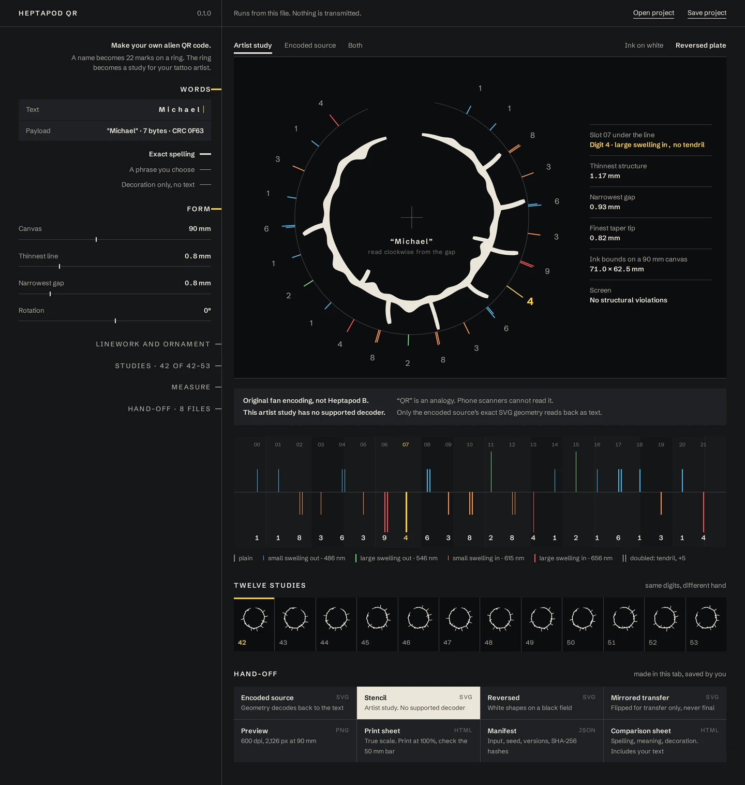
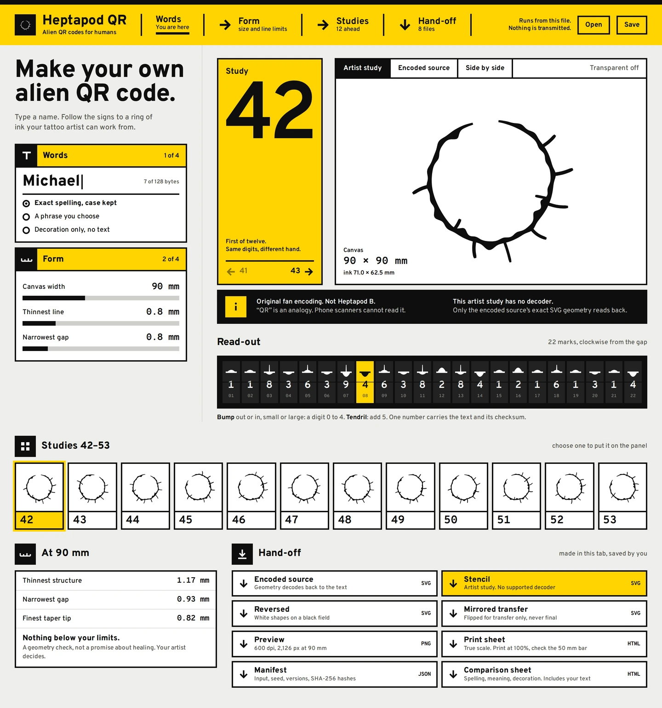

The app is a printer’s proof under a neutral grey viewing booth. Black is ink; non-repro blue is everything that will never be tattooed: rulers, safe margin, ink bounds, slot digits, callouts.

The tattoo artist’s light table. The black master (decodes) sits beside its violet carbon stencil on yellow backing (does not), so the source/derivative distinction is the first thing you see.

An observatory plate on a viewing box. The ring is shown reversed (the tool’s own reversed export) inside a reading dial; below it the ring unrolls into a spectrum where line height and doubling carry each digit. One type size throughout; colour exists only as hairlines.

Airport wayfinding. An overhead band signs the four decisions (Words, Form, Studies, Hand-off), the seed is a monumental gate number, the read-out is a split-flap board, and the caveat is a black notice panel.
